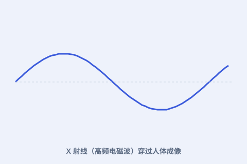

一、X 光也是电磁波
X 光是频率极高的电磁波，能穿透软组织、被骨骼挡住，从而在底片上成像。居里夫妇深谙其原理。

二、战地“小居里”
一战爆发后，她培训人员、组装可机动的 X 光车（“小居里”），开赴前线，帮助外科医生快速定位弹片与骨折。
三、放射治疗
放射性不仅能成像，高剂量还能杀死快速分裂的细胞。由此诞生的放射疗法，至今仍是癌症治疗的重要手段。
四、代价与防护
长期无防护接触射线会伤身，居里夫人晚年的病痛与此相关。这提醒我们：用射线，必须懂防护。
X 光是频率极高的电磁波，能穿透软组织、被骨骼挡住，从而在底片上成像。居里夫妇深谙其原理。

一战爆发后，她培训人员、组装可机动的 X 光车（“小居里”），开赴前线，帮助外科医生快速定位弹片与骨折。
放射性不仅能成像，高剂量还能杀死快速分裂的细胞。由此诞生的放射疗法，至今仍是癌症治疗的重要手段。
长期无防护接触射线会伤身，居里夫人晚年的病痛与此相关。这提醒我们：用射线，必须懂防护。
本页内容依据公开史料与科学史通识编写；更多来源见 本站《资料来源与延伸阅读》。延伸检索：维基百科「玛丽·居里」词条 ↗